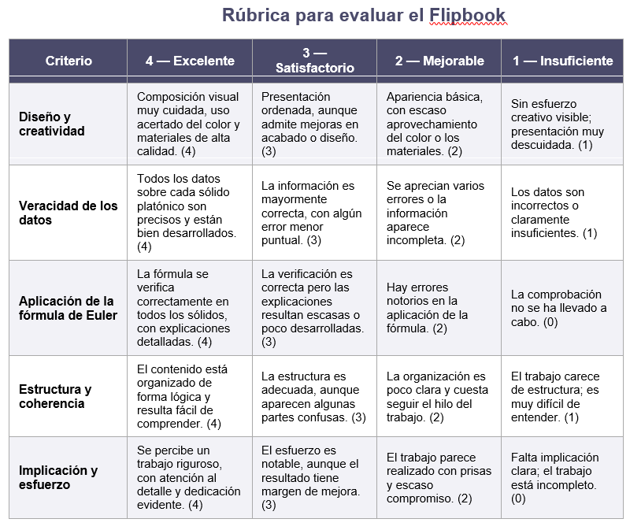

Infografía
FLIPBOOK INTERACTIVO
Objetivo:
Diseñar un flipbook dinámico en el que se representen de forma visual y detallada los cinco sólidos platónicos: tetraedro, cubo (hexaedro), octaedro, dodecaedro e icosaedro. El trabajo deberá incluir sus propiedades más relevantes y la verificación de la fórmula de Euler.
Desarrollo de la actividad:
Introducción a los sólidos platónicos
Realizar una breve investigación sobre qué son los sólidos platónicos, por qué se consideran especiales y cuáles son las características que comparten.
Organización del flipbook
Cada página o apartado del flipbook estará dedicado a uno de los sólidos y deberá incluir:
Nombre del sólido.
Representación visual (dibujo propio, imagen o construcción en papel en 3D).
Tipo de polígonos que forman sus caras.
Número de caras (C), vértices (V) y aristas (A).
Verificación de la fórmula de Euler mediante el cálculo correspondiente
Revisión y reflexión final
Comprobar que todos los datos recogidos son correctos.
Compartir y contrastar resultados con otros compañeros.
Reflexionar sobre la importancia y utilidad de la fórmula de Euler.
Criterios de evaluación:
- Creatividad y presentación del flipbook.
- Rigor y exactitud en la información de cada sólido.
- Correcta aplicación de la fórmula de Euler.
- Claridad y orden en la exposición de los contenidos.
- Implicación y trabajo durante la actividad.
Fecha de entrega:
30 de marzo 2026, a través de Teams, en formato Canva.
